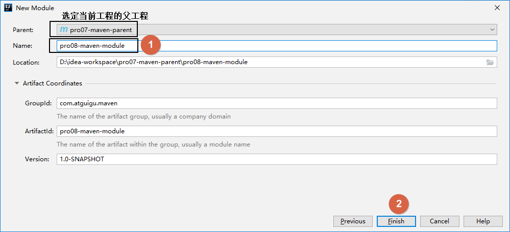
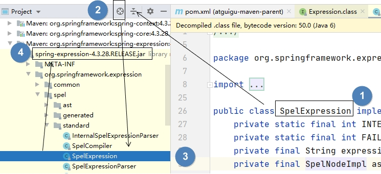

一、Maven概述1、为什么要学习Maven？①项目从开发到部署②开发和运行过程中项目中jar包的管理[1]jar包的规模[2]jar包的来源2、什么是Maven？①构建②依赖3、Maven工作机制二、Maven核心程序安装和配置1、Maven核心程序解压2、核心配置文件①指定本地仓库②配置阿里云提供的镜像仓库③配置Maven工程的基础JDK版本3、配置环境变量①检查JAVA_HOME配置是否正确②配置MAVEN_HOME③配置PATH④验证三、Maven命令行操作1、实验一：根据坐标创建Maven工程①创建目录作为下面操作的工作空间②在工作空间目录下打开命令行窗口③使用命令生成Maven工程2、实验二：在Maven工程中编写代码①主体程序[1]自动生成的pom.xml解读[2]编写主体程序②测试程序3、实验三：执行Maven的构建命令①要求②清理操作③编译操作④测试操作⑤打包操作⑥安装操作4、实验四：创建Maven版的Web工程①说明②操作③生成的pom.xml④生成的Web工程的目录结构⑤创建Servlet[1]在main目录下创建java目录[2]在java目录下创建Servlet类所在的包的目录[3]在包下创建Servlet类[4]在web.xml中注册Servlet⑥在index.jsp页面编写超链接⑦使用Maven对这个Web工程执行编译⑧配置对servlet-api.jar包的依赖⑨将Web工程打包为war包⑩将war包部署到Tomcat上运行5、实验五：让Web工程依赖Java工程①观念②操作③在Web工程中，编写测试代码[1]补充创建目录[2]确认Web工程依赖了junit[3]创建测试类④执行Maven命令[1]测试命令[2]打包命令[3]查看当前Web工程所依赖的jar包的列表[4]以树形结构查看当前Web工程的依赖信息6、实验六：测试依赖的范围①验证test范围对main目录无效②验证test和provided范围不参与服务器部署③验证provided范围对测试程序有效7、实验七：测试依赖的传递性①使用compile范围依赖spring-core②验证test和provided范围不能传递8、实验八：测试依赖的排除9、实验九：继承①创建父工程②创建模块工程③查看被添加新内容的父工程pom.xml④解读子工程的pom.xml⑤在父工程中配置依赖的统一管理⑥子工程中引用那些被父工程管理的依赖⑦在父工程中升级依赖信息的版本⑧在父工程中声明自定义属性四、Maven核心概念1、坐标①数学中的坐标②Maven中的坐标③坐标和仓库中jar包的存储路径之间的对应关系2、POM①含义②思想③对应的配置文件3、约定的目录结构①各个目录的作用②约定目录结构的意义③约定大于配置4、依赖[重点]①依赖的基本配置方式②依赖的范围[1]compile和test对比[2]compile和provided对比[3]结论③依赖的传递性[1]概念[2]传递的原则④依赖的排除[1]概念[2]配置方式5、继承①概念②作用③举例④继承本身的配置⑤在父工程中配置对依赖的管理⑥在子工程引用父工程中管理的依赖⑧在父工程中声明自定义属性6、聚合①概念[1]聚合本身的含义[2]Maven中的聚合②好处③聚合的配置7、生命周期[了解]①Clean生命周期②Site生命周期③Default生命周期④生命周期执行的特点8、插件和目标[了解]①插件②目标9、仓库[了解]五、在IDEA中使用Maven1、创建父工程2、配置Maven信息3、创建模块工程4、创建Web工程①创建模块②修改打包方式③增加目录④借助IDEA生成web.xml5、在IDEA中执行Maven命令6、在IDEA中查看某个模块的依赖信息六、jar包下载失败1、提出问题2、Maven正常下载的做法3、下载失败的第一种情况①Maven的行为描述②解决办法③要求Maven重新下载jar包4、下载失败的第二种情况[1]用法[2]原理[3]找到有嫌疑的jar包
说明：
先把之前上课做的这个课件发布上来，有比没有强。
后面有时间再优化一下，把教程、笔记、脑图分开。
爱你们，比心！❤❤❤❤❤❤❤❤
一、Maven概述
1、为什么要学习Maven？
目前学习的技术，已经足够开发任何业务功能。
①项目从开发到部署
虽然IDEA这样的开发环境可以为我们的构建操作提供全方位、自动化的支持，但是整个项目开发流程中，很大一部分并没有IDEA的支持，此时需要类似Maven这样的专门的构建工具来辅助我们完成构建操作。

②开发和运行过程中项目中jar包的管理
[1]jar包的规模
随着我们使用越来越多的框架，或者框架封装程度越来越高，项目中使用的jar包也越来越多。项目中，一个模块里面用到上百个jar包是非常正常的。
[2]jar包的来源
这个jar包所属技术的官网。官网通常是英文界面，网站的结构又不尽相同，甚至找到下载链接还发现需要通过特殊的工具下载。
第三方网站提供下载。问题是不规范，在使用过程中会出现各种问题。
- jar包的名称
- jar包的版本
- jar包内的具体细节
jar包之间的依赖关系。框架中使用的jar包，不仅数量庞大，而且彼此之间存在错综复杂的依赖关系。依赖关系的复杂程度，已经上升到了完全不能靠人力手动解决的程度。
jar包之间有可能产生冲突。进一步增加了我们在jar包使用过程中的难度。
2、什么是Maven？
Maven是Apache软件基金会组织维护的一款专门为Java项目提供构建和依赖管理支持的工具。

①构建
Java项目开发过程中，构建指的是使用“原材料”生产“产品”的过程。
构建过程包含的主要的环节：
清理：删除上一次构建的结果，为下一次构建做好准备
编译：Java源程序编译成*.class字节码文件
测试：运行提前准备好的测试程序
报告：针对刚才测试的结果生成一个全面的信息
打包
- Java工程：jar包
- Web工程：war包
安装：把一个Maven工程安装到Maven仓库
部署：将准备好的jar包或war包部署到服务器上运行
②依赖
如果A工程里面用到了B工程的类、接口、配置文件等等这样的资源，那么我们就可以说A依赖B。例如：
- commons-fileupload包依赖commons-io包
- spring-core包依赖commons-logging包
依赖管理中要解决的具体问题：
- jar包的下载：使用Maven之后，jar包会从规范的远程仓库下载到本地
- jar包之间的依赖：通过依赖的传递性自动完成
- jar包之间的冲突：通过对依赖的配置进行调整，让某些jar包不会被导入
3、Maven工作机制

二、Maven核心程序安装和配置
1、Maven核心程序解压
核心程序压缩包：apache-maven-3.5.4-bin.zip，解压到非中文、没有空格的目录。例如：

在解压目录中，我们需要着重关注Maven的核心配置文件：conf/settings.xml
2、核心配置文件
①指定本地仓库
本地仓库默认值：用户家目录/.m2/repository。由于本地仓库的默认位置是在用户的家目录下，而家目录往往是在C盘，也就是系统盘。将来Maven仓库中jar包越来越多，仓库体积越来越大，可能会拖慢C盘运行速度，影响系统性能。所以建议将Maven的本地仓库放在其他盘符下。配置方式如下：
<!-- localRepository| The path to the local repository maven will use to store artifacts.|| Default: ${user.home}/.m2/repository<localRepository>/path/to/local/repo</localRepository>--><localRepository>D:\maven-rep1026</localRepository>本地仓库这个目录，我们手动创建一个空的目录即可。
记住：一定要从注释中把localRepository标签拿出来。
注意：本地仓库本身也需要使用一个非中文、没有空格的目录。
②配置阿里云提供的镜像仓库
让Maven下载jar包的时候有更快的速度。配置的方式是：将下面mirror标签整体复制到mirrors标签的内部。
xxxxxxxxxx<mirrors> <mirror> <id>nexus-aliyun</id> <mirrorOf>central</mirrorOf> <name>Nexus aliyun</name> <url>http://maven.aliyun.com/nexus/content/groups/public</url> </mirror></mirrors>③配置Maven工程的基础JDK版本
如果按照默认配置运行，Java工程使用的JDK版本是1.5。配置的方式是：将profile标签整个复制到profiles标签内。
xxxxxxxxxx<profiles> <profile> <id>jdk-1.8</id> <activation> <activeByDefault>true</activeByDefault> <jdk>1.8</jdk> </activation> <properties> <maven.compiler.source>1.8</maven.compiler.source> <maven.compiler.target>1.8</maven.compiler.target> <maven.compiler.compilerVersion>1.8</maven.compiler.compilerVersion> </properties> </profile></profiles>3、配置环境变量
①检查JAVA_HOME配置是否正确
Maven是一个用Java语言开发的程序，它必须基于JDK来运行，需要通过JAVA_HOME来找到JDK的安装位置。

可以使用下面的命令验证：
xC:\Users\Administrator>echo %JAVA_HOME%D:\software\JavaC:\Users\Administrator>java -versionjava version "1.8.0_141"Java(TM) SE Runtime Environment (build 1.8.0_141-b15)Java HotSpot(TM) 64-Bit Server VM (build 25.141-b15, mixed mode)②配置MAVEN_HOME

配置环境变量的规律：
XXX_HOME指向的是bin目录的上一级
PATH指向的是bin目录
③配置PATH

④验证
xxxxxxxxxxC:\Users\Administrator>mvn -vApache Maven 3.5.4 (1edded0938998edf8bf061f1ceb3cfdeccf443fe; 2018-06-18T02:33:14+08:00)Maven home: D:\software\apache-maven-3.5.4\bin\..Java version: 1.8.0_141, vendor: Oracle Corporation, runtime: D:\software\Java\jreDefault locale: zh_CN, platform encoding: GBKOS name: "windows 10", version: "10.0", arch: "amd64", family: "windows"三、Maven命令行操作
学习命令行操作作为将来在IDEA中使用图形化界面操作的过渡。使用命令行可以不受IDEA这样的环境的干扰，这样就有一个纯净的测试Maven功能的环境。我们的目标是通过命令学习Maven的功能和用法。
1、实验一：根据坐标创建Maven工程
①创建目录作为下面操作的工作空间
例如：D:\maven-workspace\space201026
②在工作空间目录下打开命令行窗口

③使用命令生成Maven工程
运行mvn archetype:generate命令
下面根据提示操作
Choose a number or apply filter (format: [groupId:]artifactId, case sensitive contains): 7:【直接回车，使用默认值】
Define value for property 'groupId': com.atguigu.maven
Define value for property 'artifactId': pro01-maven-java
Define value for property 'version' 1.0-SNAPSHOT: :【直接回车，使用默认值】
Define value for property 'package' com.atguigu.maven: :【直接回车，使用默认值】
Confirm properties configuration: groupId: com.atguigu.maven artifactId: pro01-maven-java version: 1.0-SNAPSHOT package: com.atguigu.maven Y: :【直接回车，表示确认】
2、实验二：在Maven工程中编写代码
①主体程序
[1]自动生成的pom.xml解读
xxxxxxxxxx <!-- 当前Maven工程的坐标 --> <groupId>com.atguigu.maven</groupId> <artifactId>pro01-maven-java</artifactId> <version>1.0-SNAPSHOT</version> <!-- 当前Maven工程的打包方式，可选值有下面三种： --> <!-- jar：表示这个工程是一个Java工程 --> <!-- war：表示这个工程是一个Web工程 --> <!-- pom：表示这个工程是“管理其他工程”的工程 --> <packaging>jar</packaging> <name>pro01-maven-java</name> <url>http://maven.apache.org</url> <properties> <!-- 工程构建过程中读取源码时使用的字符集 --> <project.build.sourceEncoding>UTF-8</project.build.sourceEncoding> </properties> <!-- 当前工程所依赖的jar包 --> <dependencies> <!-- 使用dependency配置一个具体的依赖 --> <dependency> <!-- 在dependency标签内使用具体的坐标依赖我们需要的一个jar包 --> <groupId>junit</groupId> <artifactId>junit</artifactId> <version>4.12</version> <!-- scope标签配置依赖的范围 --> <scope>test</scope> </dependency> </dependencies>[2]编写主体程序

主体程序指的是被测试的程序，同时也是将来在项目中真正要使用的程序。
xxxxxxxxxxpackage com.atguigu.maven;public class Calculator { public int sum(int i, int j){ return i + j; } }
②测试程序

xxxxxxxxxxpackage com.atguigu.maven;import org.junit.Test;import com.atguigu.maven.Calculator;// 静态导入的效果是将Assert类中的静态资源导入当前类// 这样一来，在当前类中就可以直接使用Assert类中的静态资源，不需要写类名import static org.junit.Assert.*;public class CalculatorTest{ public void testSum(){ // 1.创建Calculator对象 Calculator calculator = new Calculator(); // 2.调用Calculator对象的方法，获取到程序运行实际的结果 int actualResult = calculator.sum(5, 3); // 3.声明一个变量，表示程序运行期待的结果 int expectedResult = 8; // 4.使用断言来判断实际结果和期待结果是否一致 // 如果一致：测试通过，不会抛出异常 // 如果不一致：抛出异常，测试失败 assertEquals(expectedResult, actualResult); } }3、实验三：执行Maven的构建命令
①要求
运行Maven中和构建操作相关的命令时，必须进入到pom.xml所在的目录。如果没有在pom.xml所在的目录运行Maven的构建命令，那么会看到下面的错误信息：
xxxxxxxxxxThe goal you specified requires a project to execute but there is no POM in this directorymvn -v这个命令和构建操作无关，在任何目录下执行都可以。
②清理操作
mvn clean
效果：删除target目录
③编译操作
主程序编译：mvn compile
测试程序编译：mvn test-compile
主体程序编译结果存放的目录：target/classes
测试程序编译结果存放的目录：target/test-classes
④测试操作
mvn test
测试的报告会存放在target/surefire-reports目录下
⑤打包操作
mvn package
打包的结果会存放在target目录下
⑥安装操作
mvn install
xxxxxxxxxx[INFO] Installing D:\maven-workspace\space201026\pro01-maven-java\target\pro01-maven-java-1.0-SNAPSHOT.jar to D:\maven-rep1026\com\atguigu\maven\pro01-maven-java\1.0-SNAPSHOT\pro01-maven-java-1.0-SNAPSHOT.jar[INFO] Installing D:\maven-workspace\space201026\pro01-maven-java\pom.xml to D:\maven-rep1026\com\atguigu\maven\pro01-maven-java\1.0-SNAPSHOT\pro01-maven-java-1.0-SNAPSHOT.pom安装的效果是将本地构建过程中生成的jar包存入Maven本地仓库。这个jar包在Maven仓库中的路径是根据它的坐标生成的。
坐标信息如下：
xxxxxxxxxx <groupId>com.atguigu.maven</groupId> <artifactId>pro01-maven-java</artifactId> <version>1.0-SNAPSHOT</version>在Maven仓库中生成的路径如下：
xxxxxxxxxxD:\maven-rep1026\com\atguigu\maven\pro01-maven-java\1.0-SNAPSHOT\pro01-maven-java-1.0-SNAPSHOT.jar另外，安装操作还会将pom.xml文件转换为XXX.pom文件一起存入本地仓库。所以我们在Maven的本地仓库中想看一个jar包原始的pom.xml文件时，查看对应XXX.pom文件即可，它们是名字发生了改变，本质上是同一个文件。
DOS命令
dir查看当前目录下的内容
cls清屏
4、实验四：创建Maven版的Web工程
①说明
使用mvn archetype:generate命令生成Web工程时，需要使用一个专门的archetype。这个专门生成Web工程骨架的archetype可以参照官网看到它的用法：

②操作
注意：如果在上一个工程的目录下执行mvn archetype:generate命令，那么Maven会报错：不能在一个非pom的工程下再创建其他工程。所以不要再刚才创建的工程里再创建新的工程。
然后运行生成工程的命令：
xxxxxxxxxxmvn archetype:generate -DarchetypeGroupId=org.apache.maven.archetypes -DarchetypeArtifactId=maven-archetype-webapp -DarchetypeVersion=1.4下面的操作按照提示执行：
Define value for property 'groupId': com.atguigu.maven Define value for property 'artifactId': pro02-maven-web Define value for property 'version' 1.0-SNAPSHOT: :【直接回车，使用默认值】
Define value for property 'package' com.atguigu.maven: :【直接回车，使用默认值】 Confirm properties configuration: groupId: com.atguigu.maven artifactId: pro02-maven-web version: 1.0-SNAPSHOT package: com.atguigu.maven Y: :【直接回车，表示确认】
③生成的pom.xml
打包的方式是war包形式
xxxxxxxxxx<packaging>war</packaging>④生成的Web工程的目录结构

webapp目录下有index.jsp
WEB-INF目录下有web.xml
⑤创建Servlet
[1]在main目录下创建java目录

[2]在java目录下创建Servlet类所在的包的目录

[3]在包下创建Servlet类
xxxxxxxxxxpackage com.atguigu.maven;import javax.servlet.http.HttpServlet;import javax.servlet.http.HttpServletRequest;import javax.servlet.http.HttpServletResponse;import javax.servlet.ServletException;import java.io.IOException;public class HelloServlet extends HttpServlet{ protected void doGet(HttpServletRequest request, HttpServletResponse response) throws ServletException, IOException { response.getWriter().write("hello maven web"); } }[4]在web.xml中注册Servlet
xxxxxxxxxx <servlet> <servlet-name>helloServlet</servlet-name> <servlet-class>com.atguigu.maven.HelloServlet</servlet-class> </servlet> <servlet-mapping> <servlet-name>helloServlet</servlet-name> <url-pattern>/helloServlet</url-pattern> </servlet-mapping>⑥在index.jsp页面编写超链接
xxxxxxxxxx<html><body><h2>Hello World!</h2><a href="helloServlet">Access Servlet</a></body></html>
⑦使用Maven对这个Web工程执行编译
执行mvn compile命令出错：
程序包javax.servlet.http不存在
程序包javax.servlet不存在
找不到符号
符号: 类 HttpServlet
……
上面的错误信息说明：我们的Web工程用到了HttpServlet这个类，而HttpServlet这个类属于servlet-api.jar这个jar包。此时我们说，Web工程需要依赖servlet-api.jar包。

⑧配置对servlet-api.jar包的依赖
对于不知道详细信息的依赖可以到https://mvnrepository.com/网站查询。使用关键词搜索，然后在搜索结果列表中选择适合的使用。

比如，我们找到的servlet-api的依赖信息：
xxxxxxxxxx<!-- https://mvnrepository.com/artifact/javax.servlet/javax.servlet-api --><dependency> <groupId>javax.servlet</groupId> <artifactId>javax.servlet-api</artifactId> <version>3.1.0</version> <scope>provided</scope></dependency>这样就可以把上面的信息加入pom.xml。重新执行mvn compile命令。
⑨将Web工程打包为war包
运行mvn package命令，生成war包的位置如下图所示：

⑩将war包部署到Tomcat上运行
将war包复制到Tomcat/webapps目录下

启动Tomcat：


通过浏览器尝试访问：http://localhost:8080/pro02-maven-web/index.jsp
5、实验五：让Web工程依赖Java工程
①观念
明确一个意识：从来只有Web工程依赖Java工程，没有反过来Java工程依赖Web工程。本质上来说，Web工程依赖的Java工程其实就是Web工程里导入的jar包。最终Java工程会变成jar包，放在Web工程的WEB-INF/lib目录下。
②操作
在pro02-maven-web工程的pom.xml中，找到dependencies标签，在dependencies标签中做如下配置：
xxxxxxxxxx<!-- 配置对Java工程pro01-maven-java的依赖 --><!-- 具体的配置方式：在dependency标签内使用坐标实现依赖 --><dependency> <groupId>com.atguigu.maven</groupId> <artifactId>pro01-maven-java</artifactId> <version>1.0-SNAPSHOT</version></dependency>③在Web工程中，编写测试代码
[1]补充创建目录
pro02-maven-wb\src\test\java\com\atguigu\maven
[2]确认Web工程依赖了junit
xxxxxxxxxx <dependency> <groupId>junit</groupId> <artifactId>junit</artifactId> <version>4.12</version> <scope>test</scope> </dependency>[3]创建测试类
把Java工程的CalculatorTest.java类复制到pro02-maven-wb\src\test\java\com\atguigu\maven目录下
④执行Maven命令
[1]测试命令
mvn test
说明：测试操作中会提前自动执行编译操作，测试成功就说明编译也是成功的。
[2]打包命令
mvn package

通过查看war包内的结构，我们看到被Web工程依赖的Java工程确实是会变成Web工程的WEB-INF/lib目录下的jar包。

[3]查看当前Web工程所依赖的jar包的列表
mvn dependency:list
[INFO] The following files have been resolved: [INFO] org.hamcrest:hamcrest-core:jar:1.3:test [INFO] javax.servlet:javax.servlet-api:jar:3.1.0:provided [INFO] com.atguigu.maven:pro01-maven-java:jar:1.0-SNAPSHOT:compile [INFO] junit:junit:jar:4.12:test
说明：javax.servlet:javax.servlet-api:jar:3.1.0:provided格式显示的是一个jar包的坐标信息。格式是：
groupId:artifactId:打包方式:version:依赖的范围
这样的格式虽然和我们XML配置文件中坐标的格式不同，但是本质上还是坐标信息，大家需要能够认识这样的格式。将来从Maven命令的日志或错误信息中看到这样格式的信息，要能够识别出来这是坐标。进而根据坐标到Maven仓库找到对应的jar包，用这样的方式解决我们遇到的报错的情况。
[4]以树形结构查看当前Web工程的依赖信息
mvn dependency:tree
[INFO] com.atguigu.maven:pro02-maven-web:war:1.0-SNAPSHOT [INFO] +- junit:junit:jar:4.12:test [INFO] | - org.hamcrest:hamcrest-core:jar:1.3:test [INFO] +- javax.servlet:javax.servlet-api:jar:3.1.0:provided [INFO] - com.atguigu.maven:pro01-maven-java:jar:1.0-SNAPSHOT:compile
我们在pom.xml中并没有依赖hamcrest-core，但是它却被加入了我们依赖的列表。原因是：junit依赖了hamcrest-core，然后基于依赖的传递性，hamcrest-core被传递到我们的工程了。
6、实验六：测试依赖的范围
说明：如果能够理解依赖范围的含义，可以不做这些操作。
①验证test范围对main目录无效
测试方式：在主体程序中导入org.junit.Test这个注解，然后执行编译。
具体操作：在pro01-maven-java\src\main\java\com\atguigu\maven目录下修改Calculator.java
xxxxxxxxxxpackage com.atguigu.maven;import org.junit.Test;public class Calculator { public int sum(int i, int j){ return i + j; } }执行Maven编译命令：
xxxxxxxxxx[ERROR] /D:/maven-workspace/space201026/pro01-maven-java/src/main/java/com/atguigu/maven/Calculator.java:[3,17] 程序包org.junit不存在②验证test和provided范围不参与服务器部署
其实就是验证：通过compile范围依赖的jar包会放入war包，通过test范围依赖的jar包不会放入war包。

③验证provided范围对测试程序有效
测试方式是在pro02-maven-web的测试程序中加入servlet-api.jar包中的类。
修改：pro02-maven-web\src\test\java\com\atguigu\maven\CalculatorTest.java
xxxxxxxxxxpackage com.atguigu.maven;import javax.servlet.http.HttpServlet;import javax.servlet.http.HttpServletRequest;import javax.servlet.http.HttpServletResponse;import javax.servlet.ServletException;import org.junit.Test;import com.atguigu.maven.Calculator;// 静态导入的效果是将Assert类中的静态资源导入当前类// 这样一来，在当前类中就可以直接使用Assert类中的静态资源，不需要写类名import static org.junit.Assert.*;public class CalculatorTest{ public void testSum(){ // 1.创建Calculator对象 Calculator calculator = new Calculator(); // 2.调用Calculator对象的方法，获取到程序运行实际的结果 int actualResult = calculator.sum(5, 3); // 3.声明一个变量，表示程序运行期待的结果 int expectedResult = 8; // 4.使用断言来判断实际结果和期待结果是否一致 // 如果一致：测试通过，不会抛出异常 // 如果不一致：抛出异常，测试失败 assertEquals(expectedResult, actualResult); } }然后运行Maven的编译命令：mvn compile
然后看到编译成功。
7、实验七：测试依赖的传递性
①使用compile范围依赖spring-core
测试方式：让pro01-maven-java工程依赖spring-core
具体操作：编辑pro01-maven-java工程根目录下pom.xml
xxxxxxxxxx<!-- https://mvnrepository.com/artifact/org.springframework/spring-core --><dependency> <groupId>org.springframework</groupId> <artifactId>spring-core</artifactId> <version>4.0.0.RELEASE</version></dependency>使用mvn dependency:tree命令查看效果：
[INFO] com.atguigu.maven:pro01-maven-java:jar:1.0-SNAPSHOT [INFO] +- junit:junit:jar:4.12:test [INFO] | - org.hamcrest:hamcrest-core:jar:1.3:test [INFO] - org.springframework:spring-core:jar:4.0.0.RELEASE:compile [INFO] - commons-logging:commons-logging:jar:1.1.1:compile
还可以在Web工程中，使用mvn dependency:tree命令查看效果（需要重新将pro01-maven-java安装到仓库）：
[INFO] com.atguigu.maven:pro02-maven-web:war:1.0-SNAPSHOT [INFO] +- junit:junit:jar:4.12:test [INFO] | - org.hamcrest:hamcrest-core:jar:1.3:test [INFO] +- javax.servlet:javax.servlet-api:jar:3.1.0:provided [INFO] - com.atguigu.maven:pro01-maven-java:jar:1.0-SNAPSHOT:compile [INFO] - org.springframework:spring-core:jar:4.0.0.RELEASE:compile [INFO] - commons-logging:commons-logging:jar:1.1.1:compile
②验证test和provided范围不能传递
从上面的例子已经能够看到，pro01-maven-java依赖了junit，但是在pro02-maven-web工程中查看依赖树的时候并没有看到junit。
要验证provided范围不能传递，可以在pro01-maven-java工程中加入servlet-api的依赖。
xxxxxxxxxx<dependency> <groupId>javax.servlet</groupId> <artifactId>javax.servlet-api</artifactId> <version>3.1.0</version> <scope>provided</scope></dependency>效果还是和之前一样：
[INFO] com.atguigu.maven:pro02-maven-web:war:1.0-SNAPSHOT [INFO] +- junit:junit:jar:4.12:test [INFO] | - org.hamcrest:hamcrest-core:jar:1.3:test [INFO] +- javax.servlet:javax.servlet-api:jar:3.1.0:provided [INFO] - com.atguigu.maven:pro01-maven-java:jar:1.0-SNAPSHOT:compile [INFO] - org.springframework:spring-core:jar:4.0.0.RELEASE:compile [INFO] - commons-logging:commons-logging:jar:1.1.1:compile
8、实验八：测试依赖的排除
测试的方式：在pro02-maven-web工程中配置对commons-logging的排除
xxxxxxxxxx<dependency> <groupId>com.atguigu.maven</groupId> <artifactId>pro01-maven-java</artifactId> <version>1.0-SNAPSHOT</version> <scope>compile</scope> <!-- 使用excludes标签配置依赖的排除 --> <exclusions> <!-- 在exclude标签中配置一个具体的排除 --> <exclusion> <!-- 指定要排除的依赖的坐标（不需要写version） --> <groupId>commons-logging</groupId> <artifactId>commons-logging</artifactId> </exclusion> </exclusions></dependency>运行mvn dependency:tree命令查看效果：
[INFO] com.atguigu.maven:pro02-maven-web:war:1.0-SNAPSHOT [INFO] +- junit:junit:jar:4.12:test [INFO] | - org.hamcrest:hamcrest-core:jar:1.3:test [INFO] +- javax.servlet:javax.servlet-api:jar:3.1.0:provided [INFO] - com.atguigu.maven:pro01-maven-java:jar:1.0-SNAPSHOT:compile [INFO] - org.springframework:spring-core:jar:4.0.0.RELEASE:compile
发现在spring-core下面就没有commons-logging了。
9、实验九：继承
①创建父工程
创建的过程和前面创建pro01-maven-java一样。
工程名称：pro03-maven-parent
工程创建好之后，要修改它的打包方式：
xxxxxxxxxx <groupId>com.atguigu.maven</groupId> <artifactId>pro03-maven-parent</artifactId> <version>1.0-SNAPSHOT</version> <packaging>pom</packaging>只有打包方式为pom的Maven工程能够管理其他Maven工程。
②创建模块工程
模块工程类似于IDEA中的module，所以需要进入pro03-maven-parent工程的根目录，然后运行mvn archetype:generate命令来创建模块工程。
假设，我们创建三个模块工程：

③查看被添加新内容的父工程pom.xml
下面modules和module标签是聚合功能的配置
xxxxxxxxxx<modules> <module>pro04-maven-module</module> <module>pro05-maven-module</module> <module>pro06-maven-module</module></modules>④解读子工程的pom.xml
xxxxxxxxxx<!-- 使用parent标签指定当前工程的父工程 --><parent> <!-- 父工程的坐标 --> <groupId>com.atguigu.maven</groupId> <artifactId>pro03-maven-parent</artifactId> <version>1.0-SNAPSHOT</version></parent><!-- 子工程的坐标 --><!-- 如果子工程坐标中的groupId和version与父工程一致，那么可以省略 --><!-- <groupId>com.atguigu.maven</groupId> --><artifactId>pro04-maven-module</artifactId><!-- <version>1.0-SNAPSHOT</version> -->⑤在父工程中配置依赖的统一管理
xxxxxxxxxx<!-- 使用dependencyManagement标签配置对依赖的管理 --><!-- 被管理的依赖并没有真正被引入到工程 --><dependencyManagement> <dependencies> <dependency> <groupId>org.springframework</groupId> <artifactId>spring-core</artifactId> <version>4.0.0.RELEASE</version> </dependency> <dependency> <groupId>org.springframework</groupId> <artifactId>spring-beans</artifactId> <version>4.0.0.RELEASE</version> </dependency> <dependency> <groupId>org.springframework</groupId> <artifactId>spring-context</artifactId> <version>4.0.0.RELEASE</version> </dependency> <dependency> <groupId>org.springframework</groupId> <artifactId>spring-expression</artifactId> <version>4.0.0.RELEASE</version> </dependency> <dependency> <groupId>org.springframework</groupId> <artifactId>spring-aop</artifactId> <version>4.0.0.RELEASE</version> </dependency> </dependencies></dependencyManagement>⑥子工程中引用那些被父工程管理的依赖
关键点：省略版本号
xxxxxxxxxx<!-- 子工程引用父工程中的依赖信息时，可以把版本号去掉。 --><!-- 把版本号去掉就表示子工程中这个依赖的版本由父工程决定。 --><!-- 具体来说是由父工程的dependencyManagement来决定。 --><dependencies> <dependency> <groupId>org.springframework</groupId> <artifactId>spring-core</artifactId> </dependency> <dependency> <groupId>org.springframework</groupId> <artifactId>spring-beans</artifactId> </dependency> <dependency> <groupId>org.springframework</groupId> <artifactId>spring-context</artifactId> </dependency> <dependency> <groupId>org.springframework</groupId> <artifactId>spring-expression</artifactId> </dependency> <dependency> <groupId>org.springframework</groupId> <artifactId>spring-aop</artifactId> </dependency></dependencies>⑦在父工程中升级依赖信息的版本
xxxxxxxxxx…… <dependency> <groupId>org.springframework</groupId> <artifactId>spring-beans</artifactId> <version>4.1.4.RELEASE</version> </dependency>……然后在子工程中运行mvn dependency:list，效果如下：
[INFO] org.springframework:spring-aop:jar:4.1.4.RELEASE:compile [INFO] org.springframework:spring-core:jar:4.1.4.RELEASE:compile [INFO] org.springframework:spring-context:jar:4.1.4.RELEASE:compile [INFO] org.springframework:spring-beans:jar:4.1.4.RELEASE:compile [INFO] org.springframework:spring-expression:jar:4.1.4.RELEASE:compile
⑧在父工程中声明自定义属性
xxxxxxxxxx<!-- 通过自定义属性，统一指定Spring的版本 --><properties> <project.build.sourceEncoding>UTF-8</project.build.sourceEncoding> <!-- 自定义标签，维护Spring版本数据 --> <atguigu.spring.version>4.3.6.RELEASE</atguigu.spring.version></properties>在需要的地方使用${}的形式来引用自定义的属性名：
xxxxxxxxxx <dependency> <groupId>org.springframework</groupId> <artifactId>spring-core</artifactId> <version>${atguigu.spring.version}</version> </dependency>真正实现“一处修改，处处生效”。
四、Maven核心概念
1、坐标
①数学中的坐标

使用x、y、z三个“向量”作为空间的坐标系，可以在空间中唯一的定位到一个点。
②Maven中的坐标
使用三个向量在Maven的仓库中唯一的定位到一个jar包。
- groupId：公司或组织的id
- artifactId：一个项目或者是项目中的一个模块的id
- version：版本号
三个向量的取值方式：
groupId：公司或组织域名的倒序，通常也会加上项目名称
- 例如：com.atguigu.maven
artifactId：模块的名称，将来作为Maven工程的工程名
version：根据自己的需要设定
- 例如：SNAPSHOT表示快照版本，正在迭代过程中，不稳定的版本
- 例如：RELEASE表示正式版本
举例：
- groupId：com.atguigu.maven
- artifactId：pro01-atguigu-maven
- version：1.0-SNAPSHOT
③坐标和仓库中jar包的存储路径之间的对应关系
坐标：
xxxxxxxxxx <groupId>javax.servlet</groupId> <artifactId>servlet-api</artifactId> <version>2.5</version>上面坐标对应的jar包在Maven本地仓库中的位置：
xxxxxxxxxxMaven本地仓库根目录\javax\servlet\servlet-api\2.5\servlet-api-2.5.jar一定要学会根据坐标到本地仓库中找到对应的jar包。
2、POM
①含义
POM：Project Object Model，项目对象模型。和POM类似的是：DOM：Document Object Model，文档对象模型。
②思想
POM表示将工程抽象为一个模型，再用程序中的对象来描述这个模型。这样我们就可以用程序来管理项目了。我们在开发过程中，最基本的做法就是将现实生活中的事物抽象为模型，然后封装模型相关的数据作为一个对象，这样就可以在程序中计算相关的数据。
③对应的配置文件
POM理念集中体现在Maven工程根目录下pom.xml这个配置文件中。所以这个pom.xml配置文件就是Maven工程的核心配置文件。其实学习Maven就是学这个文件怎么配置，各个配置有什么用。
3、约定的目录结构
①各个目录的作用

另外还有一个target目录专门存放构建操作输出的结果。
②约定目录结构的意义
Maven为了让构建过程能够尽可能自动化完成，所以必须约定一个目录结构。例如：Maven执行编译操作，必须先去Java源程序目录读取Java源代码，然后执行编译，最后把编译结果存放在target目录。
③约定大于配置
Maven对于目录结构这个问题，没有采用配置的方式，而是基于约定。这样会让我们在开发过程中非常方便。如果每次创建Maven工程后，还需要针对各个目录的位置进行详细的配置，那肯定非常麻烦。
目前开发领域的技术发展趋势就是：配置大于编码，约定大于配置。
4、依赖[重点]
①依赖的基本配置方式
核心：使用坐标依赖需要的jar包。
配置方式：在dependencies标签内配置dependency
xxxxxxxxxx<dependency> <groupId>com.atguigu.maven</groupId> <artifactId>pro01-maven-java</artifactId> <version>1.0-SNAPSHOT</version></dependency>
②依赖的范围
标签的位置：dependencies/dependency/scope
标签的可选值：compile/test/provided
[1]compile和test对比
| main目录（空间） | test目录（空间） | 开发过程（时间） | 部署到服务器（时间） | |
|---|---|---|---|---|
| compile | 有效 | 有效 | 有效 | 有效 |
| test | 无效 | 有效 | 有效 | 无效 |
[2]compile和provided对比
| main目录（空间） | test目录（空间） | 开发过程（时间） | 部署到服务器（时间） | |
|---|---|---|---|---|
| compile | 有效 | 有效 | 有效 | 有效 |
| provided | 有效 | 有效 | 有效 | 无效 |
[3]结论
compile：通常使用的第三方框架的jar包这样在项目实际运行时真正要用到的jar包都是以compile范围进行依赖的。比如SSM框架所需jar包。
test：测试过程中使用的jar包，以test范围依赖进来。比如junit。
provided：在开发过程中需要用到的“服务器上的jar包”通常以provided范围依赖进来。比如servlet-api、jsp-api。而这个范围的jar包之所以不参与部署、不放进war包，就是避免和服务器上已有的同类jar包产生冲突，同时减轻服务器的负担。说白了就是：“服务器上已经有了，你就别带啦！”
③依赖的传递性
[1]概念
A依赖B，B依赖C，那么在A没有配置对C的依赖的情况下，A里面是不是可以直接使用C。
[2]传递的原则
在A依赖B，B依赖C的前提下，C是否能够传递到A取决于B依赖C时使用的依赖范围。
- B依赖C时使用compile范围：可以传递
- B依赖C时使用test或provided范围：不能传递，所以需要这样的jar包时，就必须在需要的地方明确配置依赖才可以。
④依赖的排除
[1]概念
当A依赖B，B依赖C而且C可以传递到A的时候，但是A不想要C，需要在A里面把C排除掉。而往往这种情况都是为了避免jar包之间的冲突。

所以配置依赖的排除其实就是阻止某些jar包的传递。因为这样的jar包传递过来会和其他jar包冲突。
[2]配置方式
xxxxxxxxxx<dependency> <groupId>com.atguigu.maven</groupId> <artifactId>pro01-maven-java</artifactId> <version>1.0-SNAPSHOT</version> <scope>compile</scope> <!-- 使用excludes标签配置依赖的排除 --> <exclusions> <!-- 在exclude标签中配置一个具体的排除 --> <exclusion> <!-- 指定要排除的依赖的坐标（不需要写version） --> <groupId>commons-logging</groupId> <artifactId>commons-logging</artifactId> </exclusion> </exclusions></dependency>5、继承
①概念
Maven工程之间，A工程继承B工程
- B工程：父工程
- A工程：子工程
本质上是A工程的pom.xml中的配置继承了B工程中pom.xml的配置。
②作用
在父工程中统一管理项目中的依赖信息，具体来说是管理依赖信息的版本。
③举例
在一个工程中依赖多个Spring的jar包
[INFO] +- org.springframework:spring-core:jar:4.0.0.RELEASE:compile [INFO] | - commons-logging:commons-logging:jar:1.1.1:compile [INFO] +- org.springframework:spring-beans:jar:4.0.0.RELEASE:compile [INFO] +- org.springframework:spring-context:jar:4.0.0.RELEASE:compile [INFO] +- org.springframework:spring-expression:jar:4.0.0.RELEASE:compile [INFO] +- org.springframework:spring-aop:jar:4.0.0.RELEASE:compile [INFO] | - aopalliance:aopalliance:jar:1.0:compile
使用Spring时要求所有Spring自己的jar包版本必须一致。为了能够对这些jar包的版本进行统一管理，我们使用继承这个机制，将所有版本信息统一在父工程中进行管理。
④继承本身的配置
子工程继承父工程是在子工程的pom.xml中配置，和父工程没有关系
xxxxxxxxxx<!-- 使用parent标签指定当前工程的父工程 --><parent> <!-- 父工程的坐标 --> <groupId>com.atguigu.maven</groupId> <artifactId>pro03-maven-parent</artifactId> <version>1.0-SNAPSHOT</version></parent><!-- 子工程的坐标 --><!-- 如果子工程坐标中的groupId和version与父工程一致，那么可以省略 --><!-- <groupId>com.atguigu.maven</groupId> --><artifactId>pro06-maven-module</artifactId><!-- <version>1.0-SNAPSHOT</version> -->⑤在父工程中配置对依赖的管理
xxxxxxxxxx<!-- 使用dependencyManagement标签配置对依赖的管理 --><!-- 被管理的依赖并没有真正被引入到工程 --><dependencyManagement> <dependencies> <dependency> <groupId>org.springframework</groupId> <artifactId>spring-core</artifactId> <version>4.0.0.RELEASE</version> </dependency> <dependency> <groupId>org.springframework</groupId> <artifactId>spring-beans</artifactId> <version>4.0.0.RELEASE</version> </dependency> <dependency> <groupId>org.springframework</groupId> <artifactId>spring-context</artifactId> <version>4.0.0.RELEASE</version> </dependency> <dependency> <groupId>org.springframework</groupId> <artifactId>spring-expression</artifactId> <version>4.0.0.RELEASE</version> </dependency> <dependency> <groupId>org.springframework</groupId> <artifactId>spring-aop</artifactId> <version>4.0.0.RELEASE</version> </dependency> </dependencies></dependencyManagement>⑥在子工程引用父工程中管理的依赖
关键点：在子工程中配置依赖时省略版本号
xxxxxxxxxx<!-- 子工程引用父工程中的依赖信息时，可以把版本号去掉。 --><!-- 把版本号去掉就表示子工程中这个依赖的版本由父工程决定。 --><!-- 具体来说是由父工程的dependencyManagement来决定。 --><dependencies> <dependency> <groupId>org.springframework</groupId> <artifactId>spring-core</artifactId> </dependency> <dependency> <groupId>org.springframework</groupId> <artifactId>spring-beans</artifactId> </dependency> <dependency> <groupId>org.springframework</groupId> <artifactId>spring-context</artifactId> </dependency> <dependency> <groupId>org.springframework</groupId> <artifactId>spring-expression</artifactId> </dependency> <dependency> <groupId>org.springframework</groupId> <artifactId>spring-aop</artifactId> </dependency></dependencies>⑧在父工程中声明自定义属性
xxxxxxxxxx<!-- 通过自定义属性，统一指定Spring的版本 --><properties> <project.build.sourceEncoding>UTF-8</project.build.sourceEncoding> <!-- 自定义标签，维护Spring版本数据 --> <atguigu.spring.version>4.3.6.RELEASE</atguigu.spring.version></properties>在需要的地方使用${}的形式来引用自定义的属性名：
xxxxxxxxxx <dependency> <groupId>org.springframework</groupId> <artifactId>spring-core</artifactId> <version>${atguigu.spring.version}</version> </dependency>真正实现“一处修改，处处生效”。
6、聚合
①概念
[1]聚合本身的含义
部分组成整体

战神金刚：“我来组成头部”
[2]Maven中的聚合
使用一个“总工程”将各个“模块工程”汇集起来，作为一个整体对应完整的项目。
- 项目：整体
- 模块：部分
概念的对应关系：
从继承关系角度来看：
- 父工程
- 子工程
从聚合关系角度来看：
- 总工程
- 模块工程
②好处
一键执行Maven命令：很多构建命令都可以在“总工程”中一键执行。
以mvn install命令为例：Maven要求有父工程时先安装父工程；有依赖的工程时，先安装依赖的工程。我们自己考虑这些规则会很麻烦。但是工程聚合之后，在总工程执行mvn install可以一键完成安装，而且会自动按照正确的顺序执行。
配置聚合之后，各个模块工程会在总工程中展示一个列表，让项目中的各个模块一目了然。
③聚合的配置
在总工程中配置modules即可：
xxxxxxxxxx <modules> <module>pro04-maven-module</module> <module>pro05-maven-module</module> <module>pro06-maven-module</module> </modules>
7、生命周期[了解]
Maven为了让构建过程能够自动化完成，设计了三个主要生命周期。
①Clean生命周期
与清理操作相关，包含三个主要环节
- pre-clean
- clean
- post-clean
②Site生命周期
与生成项目信息站点相关，包含四个主要环节
- pre-site
- site
- post-site
- deploy-site
③Default生命周期
这个生命周期中包含了主要的构建操作，是最重要的生命周期。
xxxxxxxxxxvalidategenerate-sourcesprocess-sourcesgenerate-resourcesprocess-resources 复制并处理资源文件，至目标目录，准备打包。compile 编译项目的源代码。process-classesgenerate-test-sourcesprocess-test-sourcesgenerate-test-resourcesprocess-test-resources 复制并处理资源文件，至目标测试目录。test-compile 编译测试源代码。process-test-classestest 使用合适的单元测试框架运行测试。这些测试代码不会被打包或部署。prepare-packagepackage 接受编译好的代码，打包成可发布的格式，如JAR。pre-integration-testintegration-testpost-integration-testverifyinstall将包安装至本地仓库，以让其它项目依赖。deploy将最终的包复制到远程的仓库，以让其它开发人员与项目共享或部署到服务器上运行。④生命周期执行的特点
- 前面三个生命周期彼此是独立的。
- 在任何一个生命周期内部，执行任何一个具体环节的操作，都是从本周期最初的位置开始执行，直到指定的地方。（记住这句话就行了，前面的不需要记）
Maven之所以这么设计其实就是为了提高构建过程的自动化程度：让使用者只关心最终要干的即可，过程中的各个环节是自动执行的。
8、插件和目标[了解]
①插件
Maven的核心程序仅仅负责宏观调度，不做具体工作。具体工作都是由Maven插件完成的。例如：编译就是由maven-compiler-plugin-3.1.jar插件来执行的。
②目标
一个插件可以对应多个目标，而每一个目标都和生命周期中的某一个环节对应。
Default生命周期中有compile和test-compile两个和编译相关的环节，这两个环节对应compile和test-compile两个目标，而这两个目标都是由maven-compiler-plugin-3.1.jar插件来执行的。
9、仓库[了解]
本地仓库：在当前电脑上，为电脑上所有工程服务
远程仓库：需要联网
局域网：我们自己搭建的Maven私服，例如使用Nexus技术。
Internet
- 中央仓库
- 镜像仓库：内容和中央仓库保持一致，但是能够分担中央仓库的负载，同时让用户能够就近访问提高下载速度，例如：Nexus aliyun
建议：不要中央仓库和阿里云镜像混用，以免发生冲突等问题
专门搜索Maven依赖信息的网站：https://mvnrepository.com/
关于框架之间的依赖信息版本问题：
举例：SpringMVC用到jackson的jar包，需要我们自己选择正确的版本。
例如：SpringMVC的4.3.20经过测试确认，需要匹配jackson的2.9.8版本。
xxxxxxxxxx<!-- Spring进行JSON数据转换依赖 --><dependency> <groupId>com.fasterxml.jackson.core</groupId> <artifactId>jackson-core</artifactId> <version>2.9.8</version></dependency><dependency> <groupId>com.fasterxml.jackson.core</groupId> <artifactId>jackson-databind</artifactId> <version>2.9.8</version></dependency>使用Maven开发时，个别情况需要解决类似问题。这方面有赖于经验的沉淀和传承（如果有人告诉你现成的答案，就不需要自己摸索了，反之需要自己反复查资料、调试）。
在公司内实际开发时，恰当的依赖信息的组合往往会通过父工程中dependencyManagement沉淀下来，形成经验的积累。

五、在IDEA中使用Maven
IDEA演示使用的版本

1、创建父工程


2、配置Maven信息

3、创建模块工程


4、创建Web工程
①创建模块
按照前面的同样操作创建模块，此时这个模块其实还是一个Java工程。
②修改打包方式
xxxxxxxxxx<packaging>war</packaging>③增加目录

④借助IDEA生成web.xml

5、在IDEA中执行Maven命令

6、在IDEA中查看某个模块的依赖信息

六、jar包下载失败
1、提出问题
Maven替我们去下载jar包的时候，有可能出现在网络传输过程中数据丢失、中途断网，从而导致下载失败。

2、Maven正常下载的做法
- jar包在下载过程中，jar包的扩展名是xxx.jar.lastUpdated
- jar包下载成功后，Maven会将lastUpdated扩展名删除，让jar包恢复为xxx.jar这样的名称
3、下载失败的第一种情况
①Maven的行为描述
- jar包在下载过程中，jar包的扩展名是xxx.jar.lastUpdated
- 网络连接丢失，无法继续下载
- jar包没有下载完，lastUpdated扩展名不会被删除
- 当我们要求Maven重新下载时，Maven看到这个jar包的扩展名是lastUpdated，Maven就不管了
②解决办法
手动删除所有以lastUpdated结尾的文件，然后让Maven重新下载。可是当仓库中lastUpdated文件太多的时候，手动删除不可行，所以我们需要借助批处理文件：clearLastUpdated.bat。使用方法：
- 将clearLastUpdated.bat文件复制到本地仓库的根目录
- 使用文件编辑打开clearLastUpdated.bat文件
- 修改下面的内容
SET CLEAR_PATH=设置为本地仓库所在的盘符 SET CLEAR_DIR=设置为本地仓库的根目录的路径
例如：
SET CLEAR_PATH=D: SET CLEAR_DIR=D:\maven-rep1026
- 在想要执行清理时，双击运行这个文件即可
③要求Maven重新下载jar包

4、下载失败的第二种情况
jar包表面上看起来是下载完的状态，结尾并没有“.lastUpdated”扩展名。但是程序运行时找不到这个jar包中的类。例如：针对jar包中的类出现ClassNotFoundException。

遇到类似问题需要先确认一下“有嫌疑”的jar包是否存在内部损坏问题。此时可以使用上面的文件校验工具。

[1]用法
- 打开文件校验工具
- 将待校验的jar包拖拽到文件校验工具窗口内
- 将待校验的jar包旁边的*.sha1文件打开
- 比较两个SHA1值
- 一致：jar包完好
- 不一致：jar包损坏
[2]原理
HASH加密包括很多具体加密算法，但是所有HASH算法都满足下面特征：
- 只要输入数据不变，任何时候执行加密，输出不变
- 输入数据有细微变化，输出数据跟着变化
- 不可逆，不能通过密文反推回明文
- 每一种具体的HASH加密算法加密后长度固定
[3]找到有嫌疑的jar包
假设现在出现了一个ClassNotFoundException，提示找不到类：org.springframework.expression.Expression。此时我们怀疑这个类所在的jar包下载失败。
- 窍门1：类所在的package命名往往和jar包坐标的groupId部分类似。
- 窍门2：在IDEA中按两下Shift键，使用全类名搜索

找到jar包后，点右键→Show in Explorer
- 窍门3：如果前面的办法都没法定位，只能根据这个类看上去的特征和可能的功能找有可能有关的jar包
为什么不建议删整个库：
- 整个库删除后，需要重新下载整个库。此时东边的jar包没有失败，可能西边的jar包会失败。
- 整个库整体重新下载时，会有很多jar包并行下载的，相对来说并行下载本身就容易丢失数据。